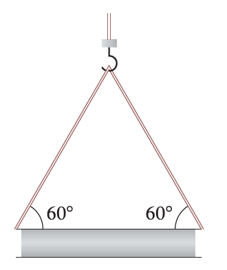

A crane suspends a 500-lb steel beam horizontally by support cables (with negligible weight) attached from a hook to each end of the beam. The support cables each make an angle of \(60^\circ\) with the beam. Find the tension vector in each support cable and the magnitude of each tension.